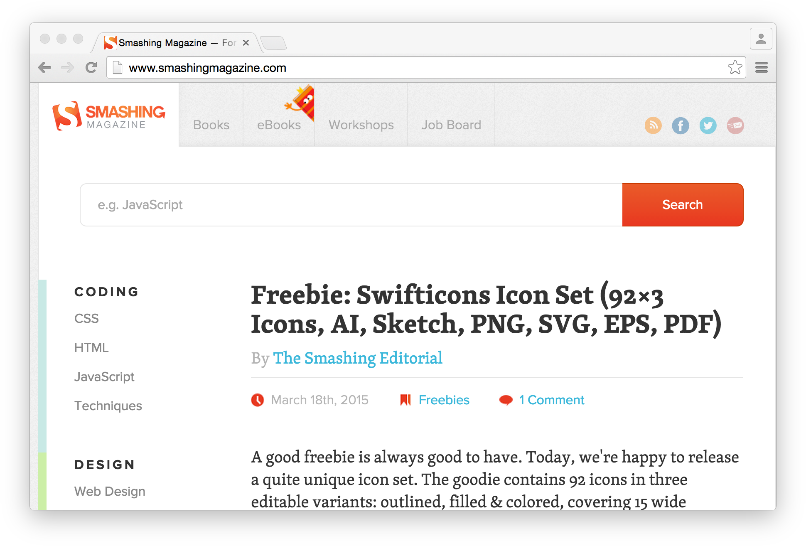

Chrome DevTools Internals:
Debugging Protocol
Konrad Dzwinel · @kdzwinel
Hello!


Examples
- DOM.highlightNode
- Network.setUserAgentOverride
- Debugger.setBreakpoint
- Runtime.evaluate
- HeapProfiler.takeHeapSnapshot
- ...



Editors/IDE
- Brackets
- Light Table
- Sublime Text
- WebStorm
- Vi

Monitoring/Testing/Other
chrome-remote-interface
var Chrome = require('chrome-remote-interface');
Chrome(function (chrome) {
with (chrome) {
Network.requestWillBeSent(function (params) {
console.log(params.request.url);
});
Network.enable();
Page.enable();
once('ready', function () {
Page.navigate({'url': 'https://github.com'});
});
}
}).on('error', function () {
console.error('Cannot connect to Chrome');
});
Chrome extensions - debugger API
chrome.debugger.attach({
tabId: tabId
}, '1.1');
chrome.debugger.sendCommand({
tabId: tabId
}, 'Page.navigate', {
url: 'https://github.com'
}, function (response) {
if (response.error) {
console.error(response.error);
return;
}
});

Alternative DevTools "back-ends"
- Android - Stetho
- iPhone - PonnyDebugger
- Node.js - Node-inspector